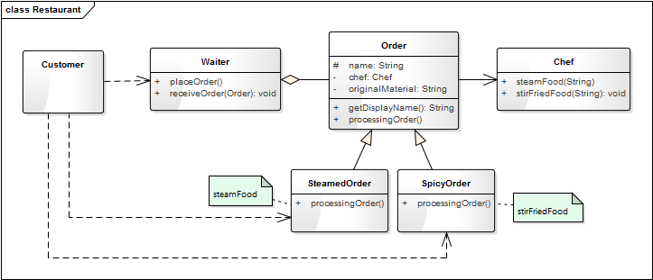
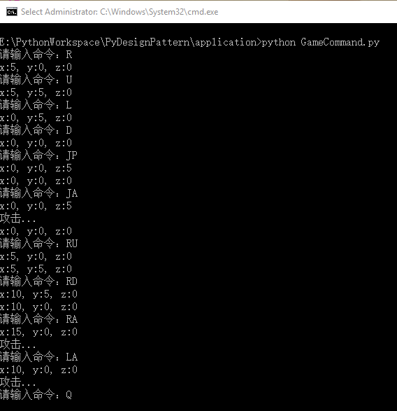

- 00 生活中的设计模式：启程之前，请不要错过我.md.html
- 01 监听模式：坑爹的热水器.md.html
- 02 适配模式：身高不够鞋来凑.md.html
- 03 状态模式：人与水的三态.md.html
- 04 单例模式：你是我生命的唯一.md.html
- 05 职责模式：我的假条去哪了.md.html
- 06 中介模式：找房子问中介.md.html
- 07 代理模式：帮我拿一下快递.md.html
- 08 装饰模式：你想怎么穿就怎么穿.md.html
- 09 工厂模式：你要拿铁还是摩卡.md.html
- 10 迭代模式：下一个就是你了.md.html
- 11 组合模式：自己组装电脑.md.html
- 12 构建模式：想要车还是庄园.md.html
- 13 克隆模式：给你一个分身术.md.html
- 14 策略模式：怎么来不重要，人到就行.md.html
- 15 命令模式：大闸蟹，走起！.md.html
- 16 备忘模式：好记性不如烂笔头.md.html
- 17 享元模式：颜料很贵必须充分利用.md.html
- 18 外观模式：学妹别慌，学长帮你.md.html
- 19 访问模式：一千个读者一千个哈姆雷特.md.html
- 20 生活中的设计模式：与经典设计模式的不解渊源.md.html
- 21 生活中的设计模式：那些未完待续的设计模式.md.html
- 22 深入解读过滤器模式：制作一杯鲜纯细腻的豆浆.md.html
- 23 深入解读对象池技术：共享让生活更便捷.md.html
- 24 深入解读回调机制：把你技能亮出来.md.html
- 25 谈谈我对设计模式的理解.md.html
- 26 谈谈我对设计原则的思考.md.html
- 27 谈谈我对项目重构的看法.md.html
- 捐赠
15 命令模式：大闸蟹，走起！
【故事剧情】
David：听说阿里开了一家实体店——盒马鲜生，特别火爆！明天就周末了，我们一起去吃大闸蟹吧！ Tony：吃货！真是味觉的哥伦布啊，哪里的餐饮新店都少不了你的影子。不过听说盒马鲜生到处是黑科技诶，而且海生是自己挑的，还满新奇的。
David：那就说好了，明天 11：00，盒马鲜生，不吃不散！
Tony 和 David 来到杭州上城区的一家分店。这里食客众多，物品丰富，特别是生鲜，从几十块钱的小龙虾到几百块的大青蟹，再到一千多的俄罗斯帝王蟹，应有尽有。帝王蟹是吃不起了，Tony 和 David 挑了一只 900g 的一号大青蟹。
食材挑好了，接下来就是现厂加工。加工的方式有多种，清蒸、姜葱炒、香辣炒、避风塘炒等，可以任意选择，当然不同的方式价格也有所不同。因为我们选的蟹是当时活动推荐的，所以免加工费。选择一种加工方式后进行下单，下单后会给你一个呼叫器，厨师做好了会有专门的服务人员送过来，坐着等就可以了……

用程序来模拟生活
盒马鲜生之所以这么火爆，一方面是因为中国从来就不缺像 David 这样的吃货，另一方面是因为里面的海生很新鲜，而且可以自己挑选。很多人都喜欢吃大闸蟹，但是你有没有注意到一个问题？从你买大闸蟹到吃上大闸蟹的整个过程，可能都没有见过厨师，而你却能享受美味的佳肴。这里有一个很重要的角色就是服务员，她帮你下订单，然后把订单传送给厨师，厨师收到订单后根据订单做餐。我们用代码来模拟一下这个过程。
源码示例：
from abc import ABCMeta, abstractmethod
# 引入ABCMeta和abstractmethod来定义抽象类和抽象方法
class Chef():
"厨师"
def steamFood(self, originalMaterial):
print(originalMaterial + "清蒸中...")
return "清蒸" + originalMaterial
def stirFriedFood(self, originalMaterial):
print(originalMaterial + "爆炒中...")
return "香辣炒" + originalMaterial
class Order(metaclass=ABCMeta):
"订单"
def __init__(self, name, originalMaterial):
self._chef = Chef()
self._name = name
self._originalMaterial = originalMaterial
def getDisplayName(self):
return self._name + self._originalMaterial
@abstractmethod
def processingOrder(self):
pass
class SteamedOrder(Order):
"清蒸"
def __init__(self, originalMaterial):
super().__init__("清蒸", originalMaterial)
def processingOrder(self):
if(self._chef is not None):
return self._chef.steamFood(self._originalMaterial)
return ""
class SpicyOrder(Order):
"香辣炒"
def __init__(self, originalMaterial):
super().__init__("香辣炒", originalMaterial)
def processingOrder(self):
if (self._chef is not None):
return self._chef.stirFriedFood(self._originalMaterial)
return ""
class Waiter:
"服务员"
def __init__(self, name):
self.__name = name
self.__order = None
def receiveOrder(self, order):
self.__order = order
print("服务员" + self.__name + "：您的 " + order.getDisplayName() + " 订单已经收到,请耐心等待")
def placeOrder(self):
food = self.__order.processingOrder()
print("服务员" + self.__name + "：您的餐 " + food + " 已经准备好，请您慢用!")
测试代码：
def testOrder():
waiter = Waiter("Anna")
steamedOrder = SteamedOrder("大闸蟹")
print("客户David：我要一份" + steamedOrder.getDisplayName())
waiter.receiveOrder(steamedOrder)
waiter.placeOrder()
print()
spicyOrder = SpicyOrder("大闸蟹")
print("客户Tony：我要一份" + steamedOrder.getDisplayName())
waiter.receiveOrder(spicyOrder)
waiter.placeOrder()
输出结果：
客户David：我要一份清蒸大闸蟹
服务员Anna：您的 清蒸大闸蟹 订单已经收到，请耐心等待
大闸蟹清蒸中...
服务员Anna：您的餐 清蒸大闸蟹 已经准备好，请您慢用!
客户Tony：我要一份清蒸大闸蟹
服务员Anna：您的 香辣炒大闸蟹 订单已经收到，请耐心等待
大闸蟹爆炒中...
服务员Anna：您的餐 香辣炒大闸蟹 已经准备好，请您慢用!
从剧情中思考命令模式
在上面的示例中，我们只要发一个订单就能吃到想要的加工方式的美味佳肴，而不用知道厨师是谁，更不用关心他是怎么做出来的。像点餐的订单一样，发送者（客户）与接收者（厨师）没有任何的依赖关系，我们只要发送订单就能完成想要的任务，这在程序中命令模式。
在上面的示例中，我们可以用类图描述如下：

命令模式
Encapsulate a request as an object, thereby letting you parametrize clients with different requests, queue or log requests, and support undoable operations.
将一个请求封装成一个对象，从而让你使用不同的请求把客户端参数化，对请求排队或者记录请求日志，可以提供命令的撤销和恢复功能。
命令模式的最大特点是将具体的命令与对应的接收者相关联（捆绑），使得调用方不用关系具体的行动执行者及如何执行，只要发送正确的命令，就能准确无误地完成相应的任务。 就像军队，将军一声令下，士兵就得分秒无差，准确执行。
命令模式是一种高内聚的模式，之所以说是高内聚是因为他把它命令封装成对象，并与接收者关联在一起，从而使（命令的）请求者（Invoker）接收者（Receiver）分离。
命令模式的模型抽象
代码框架
上面的示例代码还是相对比较粗糙，我们可以对它进行进一步的重构和优化，抽象出命令模式的框架模型。
class Command(metaclass=ABCMeta):
"命令的抽象类"
@abstractmethod
def execute(self):
pass
class CommandImpl(Command):
"命令的具体实现类"
def __init__(self, receiver):
self.__receiver = receiver
def execute(self):
self.__receiver.doSomething()
class Receiver:
"命令的接收者"
def doSomething(self):
print("do something...")
class Invoker:
"调度者"
def __init__(self):
self.__command = None
def setCommand(self, command):
self.__command = command
def action(self):
if self.__command is not None:
self.__command.execute()
def client():
invoker = Invoker()
command = CommandImpl(Receiver())
invoker.setCommand(command)
invoker.action()
类图
命令模式可用类图表示如下：

上面的类图中 Command 是核心类，表示一项任务一个动作，如示例中的订单，是所有命令的抽象类，定义了统一的执行方法 execute。具体的命令实现类 CommandA 和 CommandB 包装了命令的接收者（分别是 ReceiveA 和 ReceiveB），在执行 execute 方法时会调用接收者的实现（如 doSomething 和 function）。Receiver 是命令的接收者，也是任务的具体的执行者，如示例中的厨师。Invoker 负责命令的调用，如示例中的服务员。Client 的真正的用户，如示例中的顾客。
模型说明
（1）设计要点
命令模式中主要有四个角色，在设计命令模式时要找到并区分这些角色，具体如下。
- 命令（Command）： 要完成的任务，或要执行的动作，这是命令模式的核心角色。
- 接收者（Receiver）： 任务的具体实施方，或行动的真实执行者。
- 调度者（Invoker）： 接受任务并发送命令，对接用户的需求并执行内部的命令，负责外部用户与内部命令的交互。
- 用户（Client）： 命令的使用者，即真正的用户。
（2）优缺点
策略模式的优点：
- 对命令的发送者与接收者进行解耦，使得调用方不用关系具体的行动执行者及如何执行，只要发送正确的命令即可。
- 可以很方便地增加新的命令。
策略模式的缺点：
- 在一些系统中可能会有很多的命令，而每一个命令都需要一个具体的类去封装，容易使命令的类急剧膨胀。
实战应用
在游戏中，有两个最基本的动作，一个是行走（也叫移动），一个是攻击。这几乎是所有游戏都少不了的基础功能，不然就没法玩了！
现在我们来模拟一下游戏角色（英雄）中的移动和攻击，为简单起见，假设移动只有上移（U）、下移（D）、左移（L）、右移（R）、上跳（J）、下蹲（S）这 6 个动作，而攻击（A）只有 1 种，括号中字符代表每一个动作在键盘中的按键，也就是对应动作的调用，这些动作的命令可以单独使用，但更多的时候会组合在一起使用。比如，弹跳就是上跳 + 下蹲两个的动作的组合，我们用 JP 表示；而弹跳攻击是弹跳 + 攻击的组合（也就是上跳 + 攻击 + 下蹲），我们用 JA 表示；而移动也可以两个方向一起移动，如上移 + 右移，我们用 RU 表示。下面的程序中，为简单起见，这里用标准输入的字符来代表按键输入事件。
GameCommand.py
#!/usr/bin/python
# -*- coding: UTF-8 -*-
# Authoer: Spencer.Luo
# Date: 5/18/2018
from abc import ABCMeta, abstractmethod
import time
class GameRole:
# 每次移动的步距
STEP = 5
def __init__(self):
self.__x = 0
self.__y = 0
self.__z = 0
def leftMove(self):
self.__x -= self.STEP
def rightMove(self):
self.__x += self.STEP
def upMove(self):
self.__y += self.STEP
def downMove(self):
self.__y -= self.STEP
def jumpMove(self):
self.__z += self.STEP
def squatMove(self):
self.__z -= self.STEP
def attack(self):
print("攻击...")
def showPosition(self):
print("x:" + str(self.__x) + ", y:" + str(self.__y) + ", z:" + str(self.__z))
class GameCommand(metaclass=ABCMeta):
"游戏角色的命令类"
def __init__(self, role):
self._role = role
def setRole(self, role):
self._role = role
@abstractmethod
def execute(self):
pass
class Left(GameCommand):
"左移命令"
def execute(self):
self._role.leftMove()
self._role.showPosition()
class Right(GameCommand):
"右移命令"
def execute(self):
self._role.rightMove()
self._role.showPosition()
class Up(GameCommand):
"上移命令"
def execute(self):
self._role.upMove()
self._role.showPosition()
class Down(GameCommand):
"下移命令"
def execute(self):
self._role.downMove()
self._role.showPosition()
class Jump(GameCommand):
"弹跳命令"
def execute(self):
self._role.jumpMove()
self._role.showPosition()
# 跳起后空中停留半秒
time.sleep(0.5)
class Squat(GameCommand):
"下蹲命令"
def execute(self):
self._role.squatMove()
self._role.showPosition()
# 下蹲后伏地半秒
time.sleep(0.5)
class Attack(GameCommand):
"攻击命令"
def execute(self):
self._role.attack()
class MacroCommand(GameCommand):
def __init__(self, role = None):
super().__init__(role)
self.__commands = []
def addCommand(self, command):
# 让所有的命令作用于同一个对象
# command.setRole(self._role)
self.__commands.append(command)
def removeCommand(self, command):
self.__commands.remove(command)
def execute(self):
for command in self.__commands:
command.execute()
class GameInvoker:
def __init__(self):
self.__command = None
def setCommand(self, command):
self.__command = command
return self
def action(self):
if self.__command is not None:
self.__command.execute()
def testGame():
role = GameRole()
invoker = GameInvoker()
while True:
strCmd = input("请输入命令：");
strCmd = strCmd.upper()
if (strCmd == "L"):
invoker.setCommand(Left(role)).action()
elif (strCmd == "R"):
invoker.setCommand(Right(role)).action()
elif (strCmd == "U"):
invoker.setCommand(Up(role)).action()
elif (strCmd == "D"):
invoker.setCommand(Down(role)).action()
elif (strCmd == "JP"):
cmd = MacroCommand()
cmd.addCommand(Jump(role))
cmd.addCommand(Squat(role))
invoker.setCommand(cmd).action()
elif (strCmd == "A"):
invoker.setCommand(Attack(role)).action()
elif (strCmd == "LU"):
cmd = MacroCommand()
cmd.addCommand(Left(role))
cmd.addCommand(Up(role))
invoker.setCommand(cmd).action()
elif (strCmd == "LD"):
cmd = MacroCommand()
cmd.addCommand(Left(role))
cmd.addCommand(Down(role))
invoker.setCommand(cmd).action()
elif (strCmd == "RU"):
cmd = MacroCommand()
cmd.addCommand(Right(role))
cmd.addCommand(Up(role))
invoker.setCommand(cmd).action()
elif (strCmd == "RD"):
cmd = MacroCommand()
cmd.addCommand(Right(role))
cmd.addCommand(Down(role))
invoker.setCommand(cmd).action()
elif (strCmd == "LA"):
cmd = MacroCommand()
cmd.addCommand(Left(role))
cmd.addCommand(Attack(role))
invoker.setCommand(cmd).action()
elif (strCmd == "RA"):
cmd = MacroCommand()
cmd.addCommand(Right(role))
cmd.addCommand(Attack(role))
invoker.setCommand(cmd).action()
elif (strCmd == "UA"):
cmd = MacroCommand()
cmd.addCommand(Up(role))
cmd.addCommand(Attack(role))
invoker.setCommand(cmd).action()
elif (strCmd == "DA"):
cmd = MacroCommand()
cmd.addCommand(Down(role))
cmd.addCommand(Attack(role))
invoker.setCommand(cmd).action()
elif (strCmd == "JA"):
cmd = MacroCommand()
cmd.addCommand(Jump(role))
cmd.addCommand(Attack(role))
cmd.addCommand(Squat(role))
invoker.setCommand(cmd).action()
elif (strCmd == "Q"):
exit()
testGame()
测试结果：

在上面的 Demo 中 MacroCommand 是一种组合命令，也叫宏命令（Macro Command）。宏命令是一个具体命令类，它拥有一个集合属性，在该集合中包含了对其他命令对象的引用，如上面的弹跳命令是上跳、攻击、下蹲 3 个命令的组合，引用了 3 个命令对象。
当调用宏命令的 execute() 方法时，会循环地调用每一个子命令的 execute() 方法。一个宏命令的成员可以是简单命令，还可以继续是宏命令，宏命令将递归地调用它所包含的每个成员命令的 execute() 方法。
应用场景
- 希望系统发送一个命令（或信号），任务就能得到处理时，如 GUI 中的各种按钮的单击命令；再如自定义一套消息的响应机制。
- 需要将请求调用者和请求接收者解耦，使得调用者和接收者不直接交互时。
- 需要请一系列的命令组合成一组操作时，可以使用宏命令的方式。
© 2019 - 2023 Liangliang Lee. Powered by gin and hexo-theme-book.